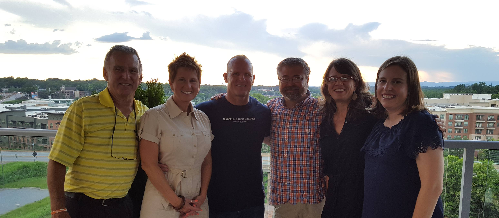
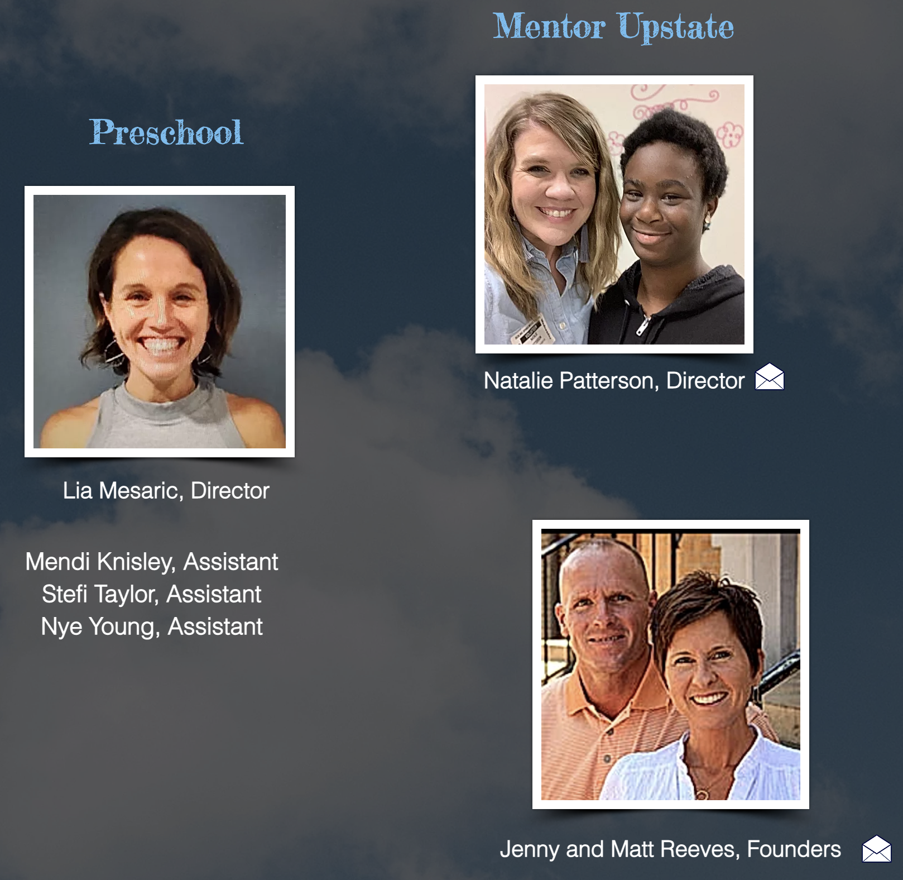
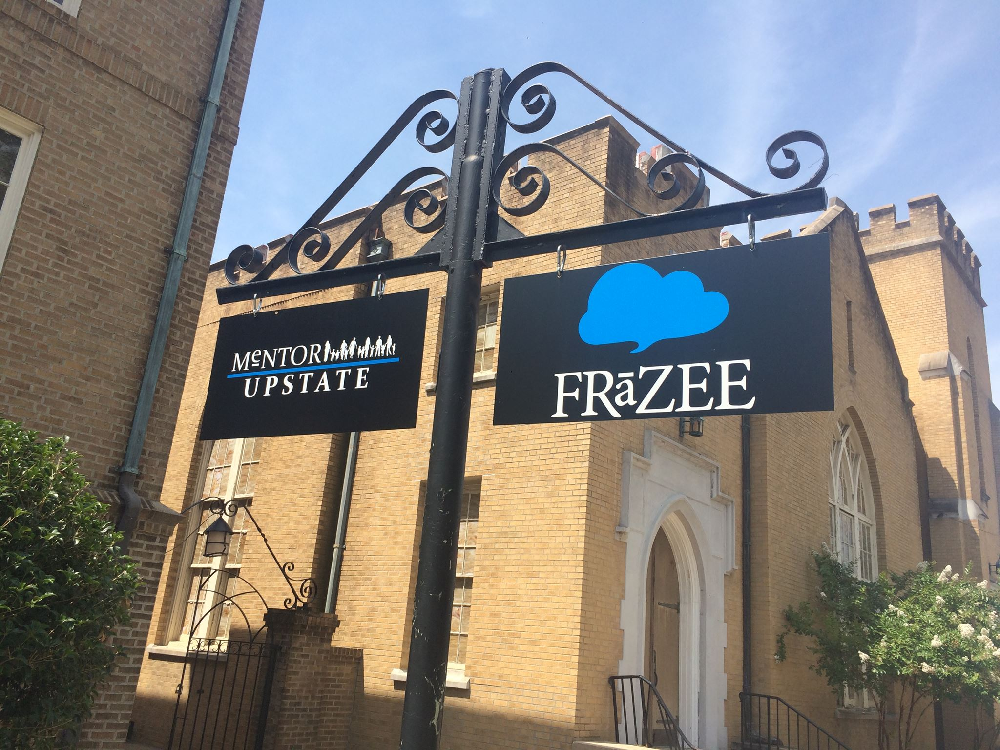
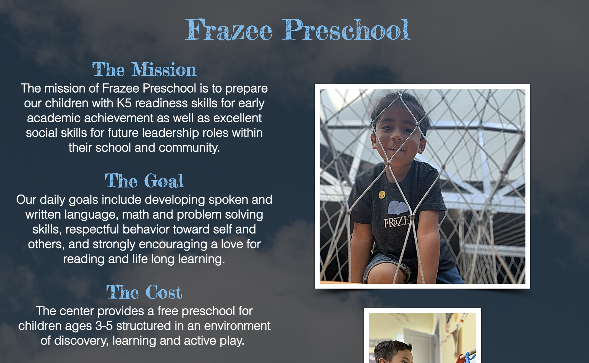

Research
The role of the Frazee Center is to better the education and lives of low-income children as they are enrolled in school by providing the resourses and programs to support their futures.
These images are just a few precious moments captured of the Frazee Center's after school program kids. From going hikes, to recieving new books, and going on bike rides; these girls get to experience invigorating and encouraging moments with our volunteers.
Our Staff and Founders
These are the members (first image) and founders (second image) of the Frazee Center. Jenny and Matt Reeves are the head organizers and leaders of this organization.
In 2006, Jenny and Matt Reeves and several like minded families wanted to make a difference in the lives of children. An after school program began in the gym and renovated classrooms of the historic Central Baptist Church on Pinckney Street with ten children from the adjacent neighborhood. By 2016, the center averaged 140 students attending daily ranging in age from 3-15 with year round programming, academic assistance, athletics, and meals offered to them free of charge. Over the years, the building itself became an "open door" community center for local organizations that shared in the mission of positively impacting children and young adults. YouthBASE, GOAT, City Youth Sports, AAU Basketball and newly founded PMAC and GirlUp GVL are just a few of the non profits that have woven in and out of Frazee's fabric and shared space on Pinckney.
The ability to keep the doors open for so many was made possible by partnerships with countless civic organizations, businesses, churches, youth groups, high schools, middle schools, college students, families and dedicated volunteers from all over the country that have freely given of their time and resources. Frazee's history is the story of these individuals that are far too many to name and the generous donors that have supported this endeavor so faithfully through the years.

Mentor Upstate
Mentor Upstate is one of our main programs established through the Frazee Center. Its purpose is to promote the establishment and development of mentoring partnerships in elementary, middle, and high schools in the upstate of South Carolina.
The Role
Mentors pursue an intentional friendship with a student at a local school in an effort to influence positive behavior.
The Commitment
Mentors meet with a student once a week during lunch or breakfast for the academic calendar year. Average time is 30-45 minutes.
The Benefits
Students with a consistent role model have statistically shown improvements in academic performance and school attendance, a decrease in disciplinary issues, and tend to display an overall more positive attitude about life, school and future choices.
click here for more infoFunding
We are funded solely by generous donors in our community and beyond. We receive no Federal or State financial support. The Frazee Center is a 501(c)(3) Tax Exempt Organization recognized by the IRS and the South Carolina Division of Public Charities. All donations are tax deductible. Tax ID # 46-1185268
We've recently moved locations! The center has relocated to a new facility at 2115 Anderson Road Greenville SC 29611. To read more about the move, click here.

Additional Research
 Greenville Nonprofits Article on Mentor Upstate.
Secondary Research
Explore the most recent news in your client's field. Use the Internet, newspapers, magazines, or journals to know what’s new. This can be news stories of interest, relevant scientific research, or anything that could help you in finding a solution to the design challenge.
The implications of Child Povery.Child poverty can damage all aspects of their current life and future. It is crucial that we are attempting to end the cycle of poverty now to change the dynamic of their futures.
NASSP Poverty and its Impact on Student's Education.Students living in poverty often have fewer resources at home to complete homework, study, or engage in activities that helps equip them for success during the school day.
GOAT Great Outdoor Adventure TripsLeveraging the outdoors to equip students in their God-given potential and then elevate them through discipleship and relationship to a position of leadership by hiring them as junior guides to lead outdoor adventure trips. Ultimately, provides low-income kids with opportunities to learn and be mentored in an enviroment they typically wouldn't find themselves in without the proper resources.
Try to find recent innovations in your client's particular area. They could be technological, behavioral, or cultural.
10 Policies to Cut Child Poverty in Half in 10 YearsIt is said that there are real solutions to ending child poverty. They may be big goals and it will take time but ultimately it will be worth the fight.
The Problem of Child PovertyEvery child deserves to live in a world where they can learn, thrive, and live up to their fullest potential. The only way to do so is to confront our current systems and institutional racism and advance change for all of our communities, especially our Black, Latinx, and indigenous children and families. We fight to end child poverty and ensure all families have resources they need to thrive and flourish by expanding, improving, and advancing new federal programs and policies that help our communities.
Take a look at other solutions in your area. Which ones worked? Which ones didn’t? Are there any that feel similar to what you might design? Any solutions that have inspired you to make one of your own?
Resources for Families within the StateThe South Carolina Department of Education provides multiple resources for families in need. It focuses on the family aspect and how to prepare parents to support their child's best interests through any age.
Financial Assistance Programs for Eligible FamiliesThese are opportuntities for families to have their substantial needs met through government funding. It directly aids the situation through Child Care Finacial Assistance.
Is there any market data that you can dig up that may be relevant in helping you solve the design challenge?
Synopsis of Mentor Upstate and their recruitment.
Concentration of Public School Students Eligible for Free or Reduced-Price LunchLow-poverty schools are defined as public schools where 25.0 percent or less of the students are eligible for FRPL; mid-low poverty schools are those where 25.1 to 50.0 percent of the students are eligible for FRPL; mid-high poverty schools are those where 50.1 to 75.0 percent of the students are eligible for FRPL; and high-poverty schools are those where more than 75.0 percent of the students are eligible for FRPL.
Little things we may not immediately consider such as whether a child is eligible for free lunch is a strong indication of how poverty affects their educational experience. If a child gaurdian is unable to afford their lunch, then most likely they stuggle to place all other meals on the table for their kids. Just going hungry alone can prohibit children from being able to concentrate on their studies comparitively to a well-norished child.